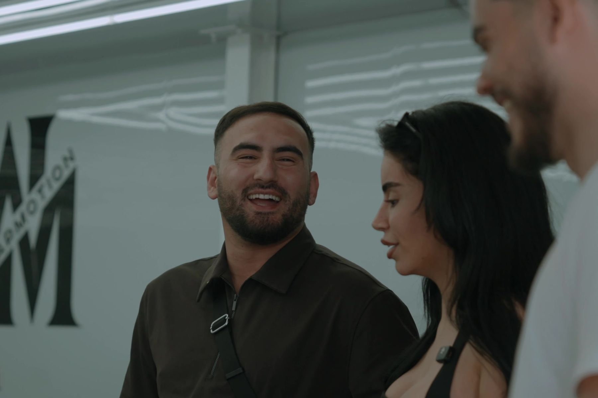

Content & fotografie op locatie
Wij komen naar je toe. Daar zit je verhaal.
We maken je foto's en video's waar het gebeurt: bij je bedrijf, bij je klanten en bij je mensen aan het werk. Zo ziet iedereen hoe je bedrijf echt is. Daarna snijden we elk beeld uit voor elk kanaal. Klik hiernaast op een formaat en zie het verschil.
KIJK62 maakt social media content vooral op locatie: bij het bedrijf zelf, bij klanten en bij medewerkers aan het werk, in Westland, Den Haag en de rest van Nederland. Waar een strakke achtergrond beter werkt, gebruiken we de eigen fotostudio in Poeldijk, voor klanten in overleg zonder studiohuur. Elk beeld wordt geleverd in 1:1, 4:5, 9:16 en 1200×627.

4:5 · Instagram feedWat we vastleggen
Laat zien hoe je bedrijf echt werkt
Geen stockfoto's van lachende mensen aan een vergadertafel. Wel je eigen pand, je klanten en je mensen die met hun vak bezig zijn.
Jouw bedrijf
Je pand, kantoor, werkplaats of winkel. Zoals klanten en sollicitanten het straks zelf zien.
Bij je klanten
Je product of dienst in gebruik, met de klant in beeld. Sterker bewijs bestaat niet.
Je mensen aan het werk
Collega's in actie, plus portretten voor LinkedIn, je website en vacatures.
Reels & korte clips
Tijdens dezelfde shoot filmen we voor Instagram Reels, TikTok en Facebook.
Voorbeeld: een uitzendbureau
Zo ziet een dag op locatie eruit
Bij een uitzendbureau draait alles om mensen. Dus fotograferen we niet alleen het kantoor. We gaan ook mee naar de klanten en naar de medewerkers die in de kassen aan het werk zijn. Zo zien opdrachtgevers en nieuwe kandidaten in één oogopslag wie je bent.
Hetzelfde doen we voor een installateur op de bouwplaats, een kwekerij tussen de planten of een restaurant tijdens de lunchdrukte.
- 1Vooraf
Plan en shotlist
We spreken met jou en je klanten af waar en wanneer we langskomen. Iedereen die herkenbaar in beeld komt, geeft vooraf toestemming.
- 2Ochtend
Op kantoor
Het team, een intakegesprek, de koffie met een nieuwe kandidaat. En portretten voor LinkedIn en vacatures.
- 3Middag
Bij de klant in de kas
Medewerkers aan het werk, het teamgevoel, en de opdrachtgever die vertelt waarom hij met jullie werkt.
- 4Daarna
Selectie en uitsnede
Wij kiezen, bewerken en snijden alles uit. Foto's en reels gaan direct je contentkalender in.

Eigen fotostudio
En als het beter in de studio kan?
Soms werkt een rustige, strakke achtergrond beter: voor portretten, productfoto's of een video waarin je iets uitlegt. Dan gebruiken we onze eigen fotostudio in Poeldijk.
Als klant van KIJK62 maak je daar in overleg gebruik van zonder studiohuur. Vaak combineren we het: de verhalen op locatie, de portretten en producten in de studio.
Vragen
Vragen over content en fotografie
Staat je vraag er niet bij? Bel of mail ons, dan leggen we het uit.
Waar vindt de shoot plaats?
Meestal bij jou op locatie: op kantoor, in de werkplaats, de winkel of de kas, en waar nodig ook bij je klanten. Werkt een strakke achtergrond beter, bijvoorbeeld voor portretten of productfoto's, dan gebruiken we onze eigen fotostudio in Poeldijk (ABC Westland 259).
Mogen jullie mijn medewerkers en klanten zomaar fotograferen?
Nee, alleen met toestemming. We stemmen vooraf met je af wie er in beeld komt, en iedereen die herkenbaar in beeld is geeft toestemming. Wie niet in beeld wil, filmen we niet herkenbaar.
Ligt het werk stil tijdens de shoot?
Nee. We bewegen mee met het ritme van de dag en leggen het echte werk vast. Dat levert ook de beste beelden op: mensen die gewoon bezig zijn, in plaats van poseren.
Kost het gebruik van jullie fotostudio extra?
Als klant van KIJK62 kun je in overleg gebruikmaken van onze eigen fotostudio in Poeldijk, zonder studiohuur. We kiezen samen waar een beeld het best tot zijn recht komt: op locatie of in de studio.
In welke regio komen jullie op locatie?
Vooral in Westland, Den Haag, Delft, Rijswijk en Zoetermeer. Voor een goede shoot komen we ook naar andere plekken in Nederland.
Welke formaten krijg ik?
Elk beeld leveren we uitgesneden voor 1:1 en 4:5 (feed), 9:16 (reels en stories) en 1200×627 (LinkedIn), zodat het er op elk kanaal goed uitziet.
Mag ik de foto's ook voor mijn website gebruiken?
Ja. Je mag alle beelden die we voor je maken gebruiken op je eigen kanalen, website, vacatures en in je drukwerk.
Meer van KIJK62
Past hier ook bij
Plan je eerste shoot op locatie
Plan een gratis kennismaking. We kijken samen naar je bedrijf, je klanten en wat social media voor je kan doen. Zonder verplichtingen.